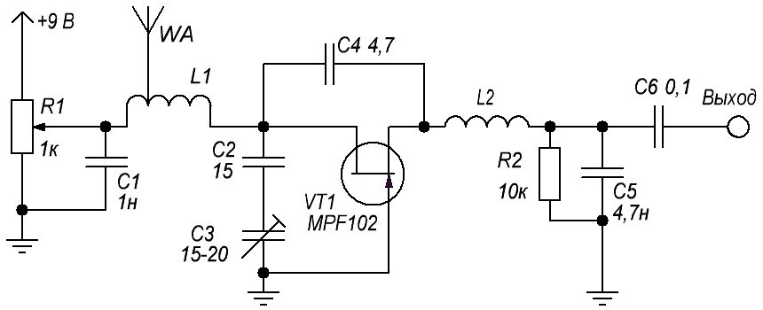
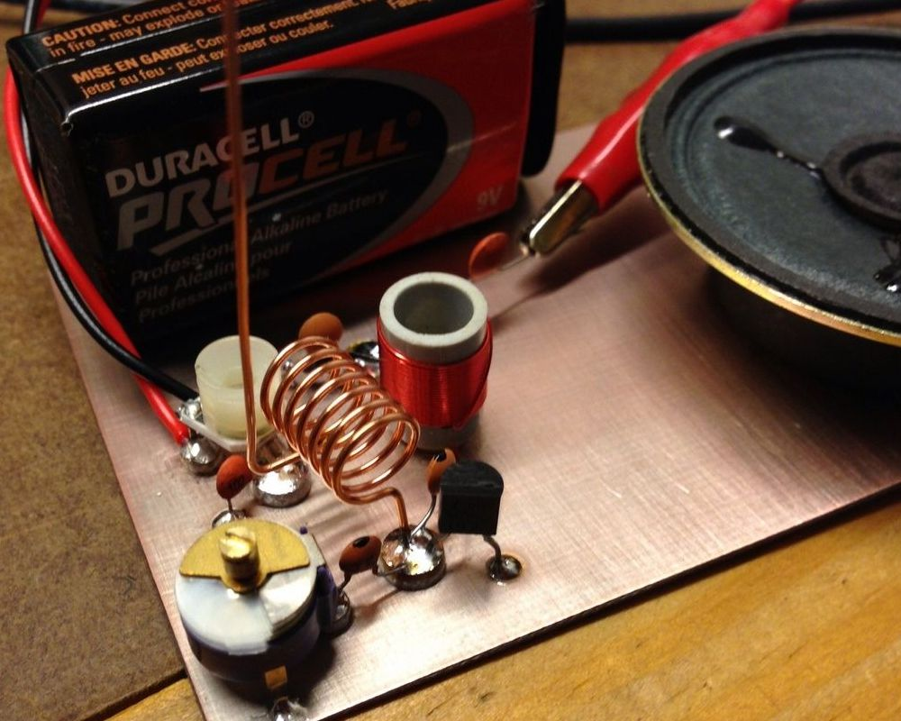

Простое радио на одном транзисторе
Это одно из самых простейших радио, которое без проблем может принять много местных FM-радиостанций. Эта схема однотранзисторного FM-приемника, работающего по принципу сверхрегенератора. Ему в пару можно сделать и передатчик - получится минирация.

Рис. 1 - Схема ФМ-радиоприёмника
Приёмник можно спаять на небольшом кусочке стеклотекстолита (рис. 2) без травления и сверления отверстий.

Рис. 2 - Вариант конструкции ФМ-радиоприёмника
Катушка на входе имеет 7 витков на оправке 5 мм с отводом от 2-го, а L2 - 30 витков провода 0,2 мм. Аналоги указанного транзистора - 2SK170, 2SK363, 2SK364, 2SK369, MPF4393, КП303(Г, Д). Антенна обычная телескопическая, питание - батарейка "Крона", ток потребления 5 мА примерно. Настройка на станцию конденсатором переменной ёмкости от любого радио. На выходе сигнал звука очень слабый, так что его надо подключить к небольшому усилителю, собранному по любой схеме.